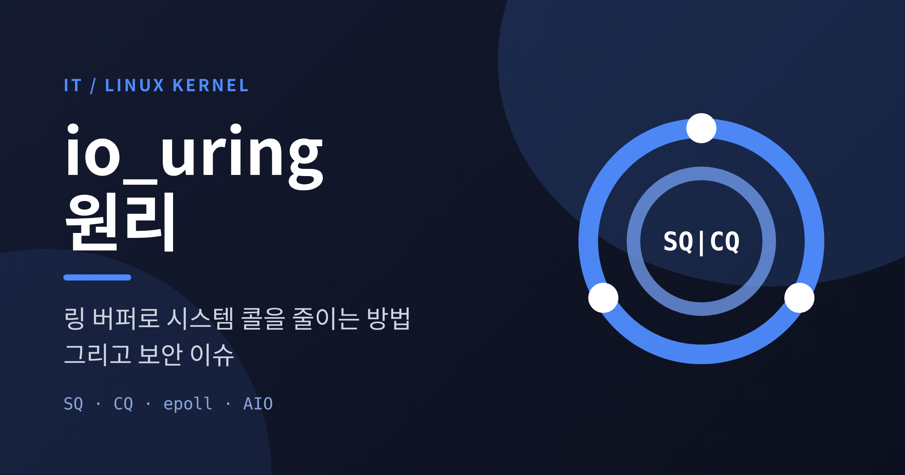
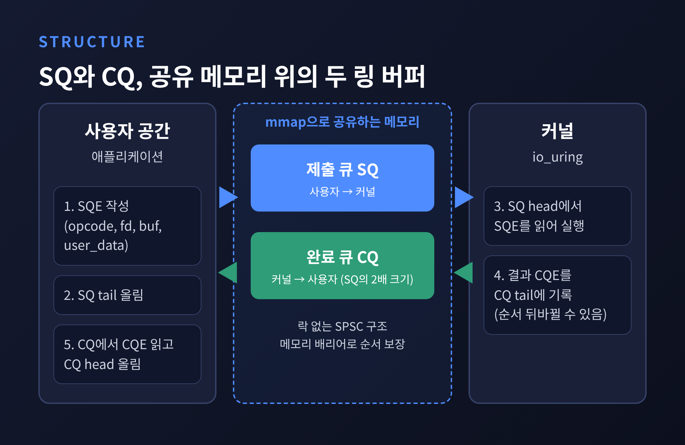
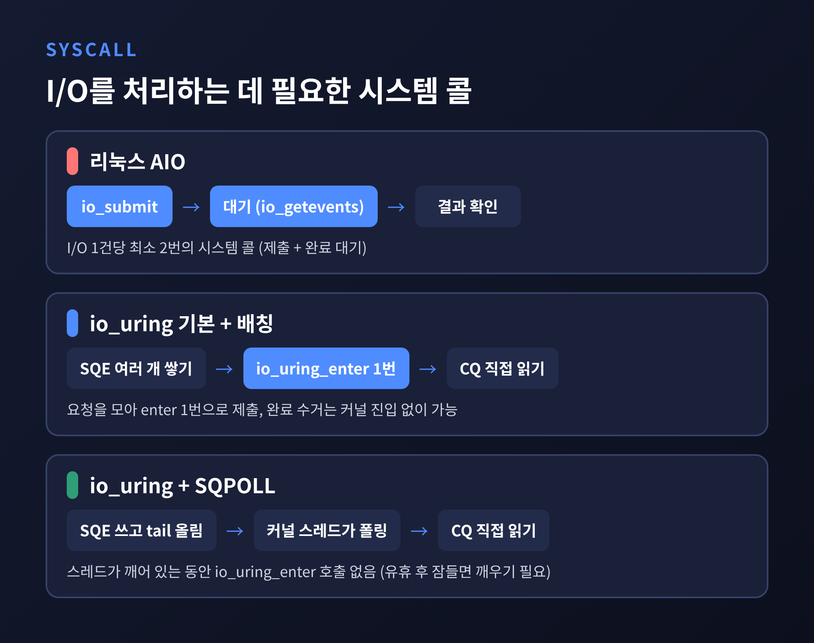
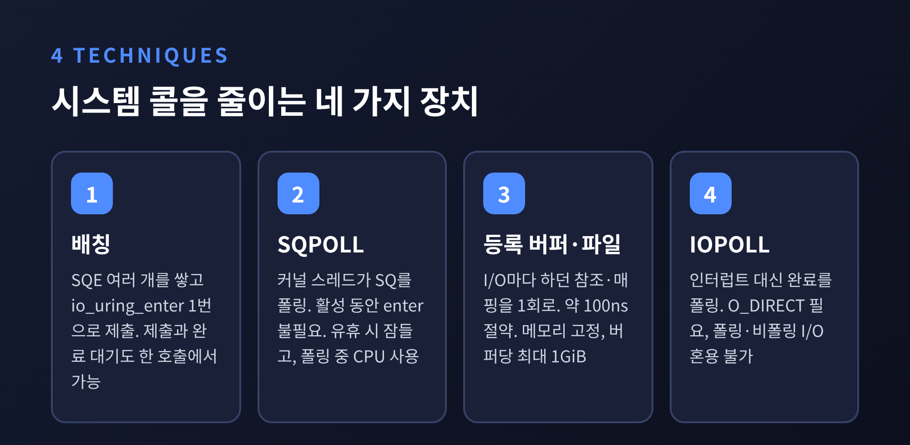
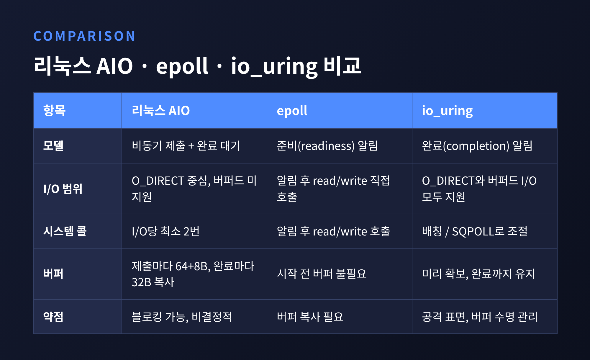
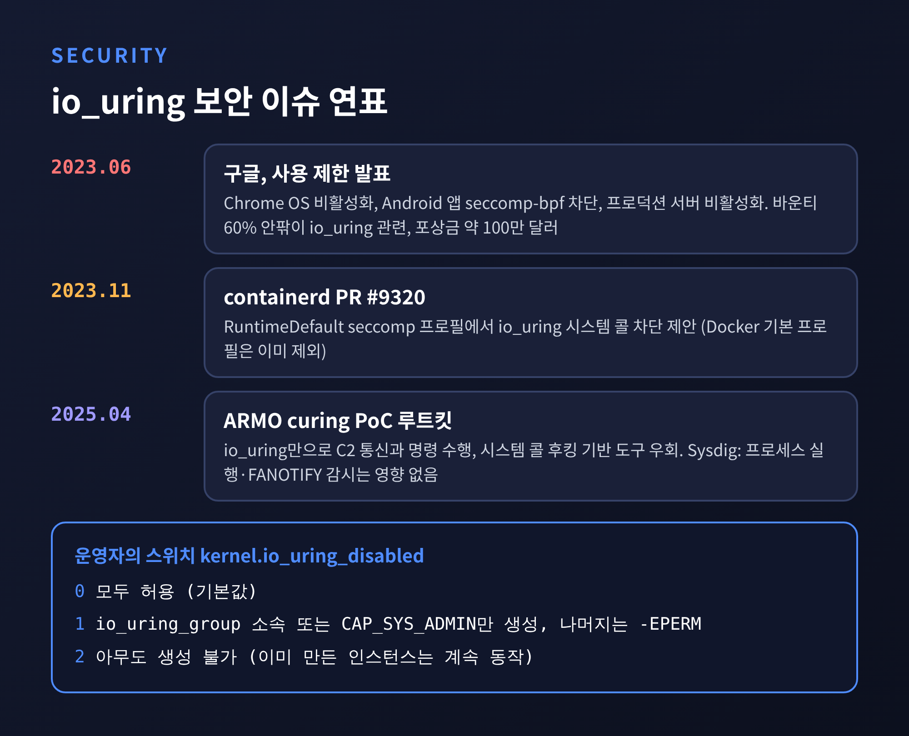

이번 글에서는 리눅스 비동기 I/O 인터페이스인 io_uring의 동작 원리를 정리해 보겠습니다. 핵심은 사용자 공간과 커널이 함께 쓰는 두 개의 링 버퍼, 제출 큐(SQ)와 완료 큐(CQ)입니다. 이 구조가 시스템 콜 횟수를 어떻게 줄이는지, epoll·AIO와는 무엇이 다른지, 그리고 왜 보안 논쟁이 따라붙는지까지 차례로 다룹니다.
세 줄로 요약하면 이렇습니다. 요청은 공유 메모리에 쌓아 한꺼번에 넘기고, 결과도 공유 메모리에서 꺼내 읽습니다. 설정에 따라 제출용 시스템 콜을 아예 없앨 수도 있습니다. 대신 커널 공격 표면이 넓어져 구글 같은 곳은 사용을 제한했습니다.
프로그램이 파일이나 네트워크를 읽으려면 커널에 요청해야 합니다. 이때 쓰는 통로가 시스템 콜입니다. 호출할 때마다 사용자 모드에서 커널 모드로 넘어갔다 돌아오는 비용이 듭니다.
리눅스 매뉴얼 페이지(io_uring(7))는 Spectre와 Meltdown 완화책이 시스템 콜을 더 비싸게 만들었고, 이것이 io_uring 설계의 동기 가운데 하나라고 설명합니다. 커널 개발자 Jens Axboe의 2022년 발표 자료에는 시스템 콜마다 파일 참조를 잡았다 놓는 fget/fput가 약 3~5%의 오버헤드를 더할 수 있다는 언급도 있습니다.
io_uring의 설계 목표는 2019년 발표에서 이렇게 정리되었습니다. 버퍼드 비동기 I/O, 폴링 I/O, 전반적인 오버헤드 감소, 그리고 쉬우면서 강력한 API입니다. 낮은 지연과 높은 IOPS, 적은 시스템 콜이 그 결과로 따라와야 한다는 구상이었습니다.
io_uring은 이름 그대로 고리(ring) 모양의 큐 두 개로 움직입니다.

매뉴얼 페이지의 표현을 빌리면, 애플리케이션은 SQ의 tail에 SQE를 추가하고 커널은 head에서 SQE를 읽어 갑니다. CQ는 반대입니다. 커널이 tail에 CQE를 추가하고 애플리케이션이 head에서 읽습니다. 각자 한쪽 끝만 움직이는 단일 생산자-단일 소비자 구조라서, 락 없이 메모리 배리어만으로 조율합니다.
큐의 크기는 2의 거듭제곱이고, 인덱스는 head나 tail에 크기 마스크를 씌워 계산합니다. LWN의 설명에 따르면 CQ는 SQ보다 두 배 큽니다.
준비 과정은 이렇습니다. io_uring_setup()이 파일 디스크립터를 돌려주면, 애플리케이션이 mmap()으로 SQ 링, SQE 배열, CQ 링 세 영역을 자기 주소 공간에 매핑합니다. 커널 5.4부터는 IORING_FEAT_SINGLE_MMAP 덕분에 한 번의 매핑으로도 충분합니다. 이후의 요청과 결과 교환은 모두 이 공유 메모리 위에서 일어납니다. 요청 내용을 커널로 복사하는 과정이 필요 없다는 뜻입니다.
SQE는 별도의 배열에 두고, SQ는 그 인덱스만 담습니다. 완료 순서가 제출 순서와 다를 수 있기 때문입니다. 그래서 SQE마다 user_data를 붙여 두고, 결과 CQE의 user_data로 어떤 요청의 답인지 맞춥니다. 결과 값은 res 필드에 담기는데, 성공이면 반환 값이고 실패면 음수 errno입니다.
제출한 SQE 하나에는 원칙적으로 CQE 하나가 대응합니다. 다만 IOSQE_CQE_SKIP_SUCCESS나 멀티샷 연산처럼 예외도 있습니다.
링 버퍼 자체는 출발점입니다. 시스템 콜 비용을 실제로 줄이는 것은 그 위에 얹은 몇 가지 장치입니다.

첫째는 배칭입니다. 요청 여러 개를 SQ에 쌓아 두고 io_uring_enter()를 한 번만 호출하면 됩니다. 이 호출은 제출과 완료 대기를 함께 처리할 수도 있습니다. 매뉴얼의 예제는 to_submit=1, min_complete=1에 IORING_ENTER_GETEVENTS 플래그를 주어 한 번에 제출하고 기다립니다. 완료된 결과를 읽을 때는 기본 모드에서도 커널에 들어갈 필요 없이 CQ를 직접 확인하면 됩니다.
둘째는 SQPOLL입니다. 커널 스레드가 SQ를 계속 살피므로, 애플리케이션은 SQE를 쓰고 tail만 올리면 됩니다. 매뉴얼은 이 모드에서 io_uring_enter(2)를 호출할 필요가 없다고 적고 있습니다. 제출도 완료 수거도 시스템 콜 없이 가능해지는 셈입니다. 다만 공짜는 아닙니다. 스레드가 설정한 유휴 시간 동안 일이 없으면 플래그로 알리고 잠들며, 잠든 뒤에는 io_uring_enter로 깨워야 합니다. 폴링하는 동안 CPU를 쓴다는 점도 감안해야 합니다.
셋째는 등록(register)입니다. io_uring_register()로 파일과 버퍼를 미리 등록해 두면 I/O마다 참조를 잡고 풀거나 사용자 메모리를 매핑하는 비용이 사라집니다. Axboe의 2019년 발표 자료는 등록 버퍼로 제출 경로에서 get_user_pages()를 없애면 약 100ns를 아낀다고 소개합니다. 한계도 있습니다. 등록된 버퍼는 메모리에 고정되어 RLIMIT_MEMLOCK 한도에 포함되고, 버퍼 하나는 최대 1GiB입니다.
넷째는 폴링 I/O(IOPOLL)입니다. 인터럽트를 기다리는 대신 완료를 계속 확인합니다. O_DIRECT와 파일시스템·블록 장치의 폴링 지원이 필요하고, 한 인스턴스 안에서 폴링 I/O와 비폴링 I/O를 섞을 수 없습니다.
정리하면 예전엔 I/O 한 건마다 커널 문을 두드렸지만, 지금은 문을 두드리는 횟수를 설정으로 조절합니다.
리눅스에는 io_uring 이전에도 네이티브 AIO(libaio)가 있었습니다. 그러나 한계가 분명했습니다.

지원하지 않는 연산, 예컨대 버퍼드 읽기나 소켓·파이프 연산은 io_submit 호출 안에서 동기적으로 실행됩니다. ext4에서는 메타데이터를 읽느라 io_submit이 블록되기도 합니다. 이름만 비동기였던 셈입니다.
io_uring은 O_DIRECT와 버퍼드 I/O를 모두 다루고 fdatasync도 지원합니다. QEMU에 io_uring 엔진을 제안한 패치 작성자는 제출 시스템 콜이 블록되지 않는다는 점을 장점으로 꼽았습니다. 소켓까지 포함해 연산 종류도 계속 늘었는데, 2025년 4월 ARMO의 글은 당시 io_uring 연산이 61개라고 적고 있습니다.
성능 수치는 조건을 가려 읽어야 합니다. 2021년 10월 Phoronix는 AMD Ryzen 9 5950X와 Intel Optane P5800X 두 대를 쓴 Axboe의 시험에서 코어 하나로 1,000만 IOPS가 나왔다고 보도했습니다. 직전 주에는 약 890만이었습니다. 대단한 수치이지만 최적화된 시험 환경의 결과입니다. 일반 서비스에서 같은 수치를 기대할 수는 없습니다. libaio와 io_uring의 IOPS를 직접 맞비교한 숫자는 이번에 확인한 자료에서 텍스트로 확인하지 못했습니다.
epoll과 io_uring은 질문 자체가 다릅니다.
epoll은 준비(readiness) 모델입니다. 소켓이 읽을 수 있는 상태가 되면 커널이 알려 주고, 데이터는 애플리케이션이 read를 호출해 직접 가져옵니다. I/O를 시작하기 전에 버퍼를 잡아 둘 필요가 없어서 메모리를 아끼고 코드가 단순합니다.
io_uring은 완료(completion) 모델입니다. 읽기나 쓰기가 끝난 뒤에 알려 주며, 그때 데이터는 이미 내 메모리에 들어와 있습니다. 대신 요청을 낼 때 버퍼를 먼저 마련하고 완료될 때까지 살려 두어야 합니다. 버퍼 수명 관리의 부담이 커집니다. Nick Cameron은 이 구조를 Windows의 IOCP와 닮았다고 설명합니다.

수치로는 Netty의 io_uring 트랜스포트 초기 릴리스(2020년 11월) 결과가 자주 인용됩니다. 스레드 1개, 로컬호스트, 커널 5.9 이상 조건에서 epoll(NIO) 대비 tcpkali 대역폭은 약 9,988Mbps에서 21,022Mbps로 2.1배가 되었고, echo 벤치는 초당 80,820건에서 267,371건으로 3.3배가 되었습니다. 그러나 작성자 스스로 빠르게 돌려 본 로컬호스트 테스트이며 실제 네트워크 환경의 벤치가 필요하다고 단서를 달았습니다. 이 수치를 일반적인 성능 향상으로 받아들이기는 어렵습니다. 당시 프로젝트도 인큐베이터 단계였습니다.
epoll이 여전히 쓸 만한 이유도 분명합니다. 준비 모델은 구현이 단순하고 오래 검증되었습니다. 반대로 io_uring은 IORING_OP_POLL_ADD로 epoll식 준비 알림까지 흉내 낼 수 있어서 두 모델을 오가며 쓰는 길도 열려 있습니다. 어느 쪽이 정답이라기보다 워크로드와 팀의 숙련도에 맞춰 고를 문제입니다.
공유 메모리와 새로운 커널 경로는 성능을 주는 동시에 점검할 코드를 늘렸습니다. 업계의 반응은 비교적 분명했습니다.

2023년 6월 구글은 io_uring 사용 제한을 발표했습니다. Chrome OS에서는 안전하게 가둘 방법을 찾을 때까지 끄고, Android 앱에는 seccomp-bpf 필터로 접근을 막고, 구글 프로덕션 서버에서도 비활성화했습니다. 구글 보안 블로그는 신뢰할 수 있는 구성요소에서만 안전하다고 본다는 취지로 설명했습니다. 보도에서 반복된 수치는 구글 바운티 프로그램의 60%가 io_uring과 관련되었다는 것, 그리고 io_uring 취약점에 약 100만 달러가 지급되었다는 것입니다. 다만 60%가 익스플로잇인지, 제출 건수인지, 취약점인지는 매체마다 표현이 조금씩 다릅니다. 구글 원문은 이번에 직접 열어보지 못했으므로, 정확한 모집단은 확인이 필요합니다.
컨테이너 쪽도 움직였습니다. Docker의 기본 seccomp 프로필에서 io_uring이 빠졌고, 2023년 11월에는 containerd에 RuntimeDefault 프로필에서 io_uring 관련 시스템 콜을 막자는 PR이 올라왔습니다. 그래서 Sysdig는 기본 프로필을 쓰는 대부분의 컨테이너 워크로드는 영향이 없다고 봅니다.
2025년 4월에는 다른 종류의 문제가 제기되었습니다. 보안업체 ARMO가 공개한 개념증명 루트킷 curing은 C2 통신과 명령 수행을 io_uring만으로 처리해 시스템 콜 후킹에 기대는 탐지 도구를 피했습니다. ARMO는 Falco가 이런 동작을 거의 보지 못한다고 밝혔고, Tetragon은 기본 정책으로는 놓쳐도 kprobe나 LSM 훅으로 탐지할 수 있다고 정리했습니다.
반론도 있습니다. Sysdig는 이 기법이 프로세스 실행이나 파일·프로세스 은닉까지 가리지는 못하며, FANOTIFY 기반 감시는 영향을 받지 않고, 공격자가 이미 시스템에 들어온 뒤에야 쓸 수 있다고 짚었습니다. 위협의 크기를 두고는 관점이 갈립니다.
운영자가 쓸 수 있는 스위치는 kernel.io_uring_disabled 설정입니다.
이미 만든 인스턴스는 값을 바꿔도 계속 동작합니다. 한편 위키백과에 따르면 Axboe는 2026년 발표에서 io_uring이 epoll이나 futex보다 나쁘지 않다고 반박했고, Linux 7.0에서는 BPF 기반으로 SQ를 세밀하게 거르는 기능이 추가되었습니다. 이 부분은 2차 자료를 근거로 한 서술이라 원문 확인이 필요합니다.
제가 보기에 판단 기준은 세 가지입니다.
세 가지가 모두 맞는다면 시도해 볼 만합니다. 그렇지 않다면 epoll도 충분히 좋은 선택입니다.
끝으로 한 마디만 더 드리겠습니다. io_uring은 마법이 아니라 구조의 변화입니다. 요청과 결과를 공유 메모리에 두어 시스템 콜을 줄였고, 그만큼 커널과 사용자 공간이 더 많은 것을 공유하게 되었습니다.
— 빠른 길은 대개 더 넓은 길이고, 넓은 길은 더 많은 관리를 요구합니다.
io_uring을 도입하겠냐고 물으신다면, 먼저 우리 환경에서 시스템 콜이 정말 병목인지부터 재 보겠다고 답하겠습니다.